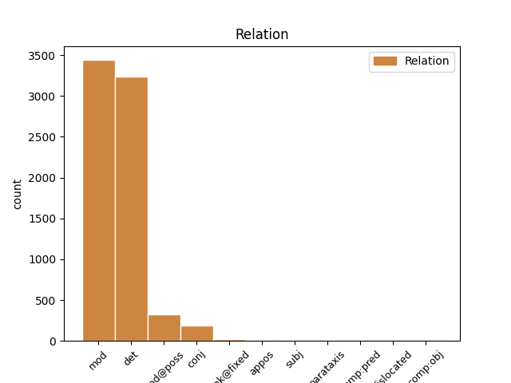
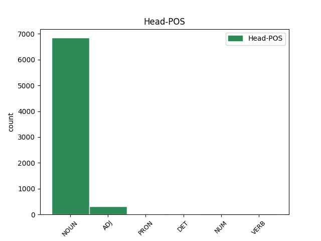
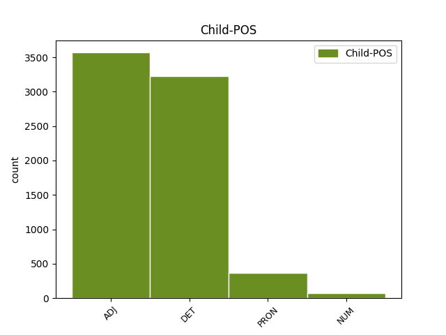

Distribution of features within this leaf



Agreement Rules sorted by frequency.
When the dependent token is None
1 Det _ _ _ _ 0 _ _ _
2 vore _ _ _ _ 0 _ _ _
3 säkert _ _ _ _ 0 _ _ _
4 mentalhygieniskt mentalhygienisk ADJ JJ|POS|NEU|SIN|IND|NOM Case=Nom|Definite=Ind|Degree=Pos|Gender=Neut|Number=Sing 5 mod _ _
5 värdefullt värdefull ADJ JJ|POS|NEU|SIN|IND|NOM Case=Nom|Definite=Ind|Degree=Pos|Gender=Neut|Number=Sing 0 _ _ _
6 om _ _ _ _ 0 _ _ _
7 varje _ _ _ _ 0 _ _ _
8 förälder _ _ _ _ 0 _ _ _
9 som _ _ _ _ 0 _ _ _
10 ägnar _ _ _ _ 0 _ _ _
11 sig _ _ _ _ 0 _ _ _
12 åt _ _ _ _ 0 _ _ _
13 barnavård _ _ _ _ 0 _ _ _
14 på _ _ _ _ 0 _ _ _
15 heltid _ _ _ _ 0 _ _ _
16 kunde _ _ _ _ 0 _ _ _
17 få _ _ _ _ 0 _ _ _
18 hjälp _ _ _ _ 0 _ _ _
19 med _ _ _ _ 0 _ _ _
20 barnpassning _ _ _ _ 0 _ _ _
21 åtminstone _ _ _ _ 0 _ _ _
22 några _ _ _ _ 0 _ _ _
23 timmar _ _ _ _ 0 _ _ _
24 i _ _ _ _ 0 _ _ _
25 veckan _ _ _ _ 0 _ _ _
26 . _ _ _ _ 0 _ _ _
When the dependent token is None
1 Både _ _ _ _ 0 _ _ _
2 för _ _ _ _ 0 _ _ _
3 barnen _ _ _ _ 0 _ _ _
4 och _ _ _ _ 0 _ _ _
5 för _ _ _ _ 0 _ _ _
6 deras _ _ _ _ 0 _ _ _
7 föräldrar _ _ _ _ 0 _ _ _
8 är _ _ _ _ 0 _ _ _
9 det _ _ _ _ 0 _ _ _
10 viktigt _ _ _ _ 0 _ _ _
11 att _ _ _ _ 0 _ _ _
12 föräldrarna _ _ _ _ 0 _ _ _
13 får _ _ _ _ 0 _ _ _
14 möjlighet _ _ _ _ 0 _ _ _
15 att _ _ _ _ 0 _ _ _
16 välja _ _ _ _ 0 _ _ _
17 den en DET DT|UTR|SIN|DEF Definite=Def|Gender=Com|Number=Sing|PronType=Art 18 det _ _
18 livsform livsform NOUN NN|UTR|SIN|IND|NOM Case=Nom|Definite=Ind|Gender=Com|Number=Sing 0 _ _ _
19 som _ _ _ _ 0 _ _ _
20 de _ _ _ _ 0 _ _ _
21 trivs _ _ _ _ 0 _ _ _
22 bäst _ _ _ _ 0 _ _ _
23 med _ _ _ _ 0 _ _ _
24 . _ _ _ _ 0 _ _ _
When the dependent token is None
1 Här _ _ _ _ 0 _ _ _
2 i _ _ _ _ 0 _ _ _
3 landet _ _ _ _ 0 _ _ _
4 låter _ _ _ _ 0 _ _ _
5 vi _ _ _ _ 0 _ _ _
6 oftast _ _ _ _ 0 _ _ _
7 våra vi PRON PS|UTR/NEU|PLU|DEF Definite=Def|Number=Plur|Poss=Yes|PronType=Prs 8 mod@poss _ _
8 barn barn NOUN NN|NEU|PLU|IND|NOM Case=Nom|Definite=Ind|Gender=Neut|Number=Plur 0 _ _ _
9 vänta _ _ _ _ 0 _ _ _
10 till _ _ _ _ 0 _ _ _
11 6 _ _ _ _ 0 _ _ _
12 eller _ _ _ _ 0 _ _ _
13 rent _ _ _ _ 0 _ _ _
14 av _ _ _ _ 0 _ _ _
15 till _ _ _ _ 0 _ _ _
16 7 _ _ _ _ 0 _ _ _
17 års _ _ _ _ 0 _ _ _
18 ålder _ _ _ _ 0 _ _ _
19 innan _ _ _ _ 0 _ _ _
20 de _ _ _ _ 0 _ _ _
21 får _ _ _ _ 0 _ _ _
22 dessa _ _ _ _ 0 _ _ _
23 erfarenheter _ _ _ _ 0 _ _ _
24 . _ _ _ _ 0 _ _ _
When the dependent token is None
1 Men _ _ _ _ 0 _ _ _
2 det _ _ _ _ 0 _ _ _
3 är _ _ _ _ 0 _ _ _
4 ingenting _ _ _ _ 0 _ _ _
5 som _ _ _ _ 0 _ _ _
6 säger _ _ _ _ 0 _ _ _
7 - _ _ _ _ 0 _ _ _
8 och _ _ _ _ 0 _ _ _
9 knappast _ _ _ _ 0 _ _ _
10 någon _ _ _ _ 0 _ _ _
11 seriös _ _ _ _ 0 _ _ _
12 modern _ _ _ _ 0 _ _ _
13 forskare _ _ _ _ 0 _ _ _
14 som _ _ _ _ 0 _ _ _
15 sagt _ _ _ _ 0 _ _ _
16 - _ _ _ _ 0 _ _ _
17 att _ _ _ _ 0 _ _ _
18 1. _ _ _ _ 0 _ _ _
19 det _ _ _ _ 0 _ _ _
20 måste _ _ _ _ 0 _ _ _
21 vara _ _ _ _ 0 _ _ _
22 modern _ _ _ _ 0 _ _ _
23 , _ _ _ _ 0 _ _ _
24 som _ _ _ _ 0 _ _ _
25 står _ _ _ _ 0 _ _ _
26 för _ _ _ _ 0 _ _ _
27 kontakten _ _ _ _ 0 _ _ _
28 , _ _ _ _ 0 _ _ _
29 2. _ _ _ _ 0 _ _ _
30 det _ _ _ _ 0 _ _ _
31 måste _ _ _ _ 0 _ _ _
32 vara _ _ _ _ 0 _ _ _
33 bara _ _ _ _ 0 _ _ _
34 en en NUM RG|UTR|SIN|IND|NOM Case=Nom|Definite=Ind|Gender=Com|Number=Sing|NumType=Card 35 mod _ _
35 person person NOUN NN|UTR|SIN|IND|NOM Case=Nom|Definite=Ind|Gender=Com|Number=Sing 0 _ _ _
36 , _ _ _ _ 0 _ _ _
37 som _ _ _ _ 0 _ _ _
38 vårdar _ _ _ _ 0 _ _ _
39 barnet _ _ _ _ 0 _ _ _
40 , _ _ _ _ 0 _ _ _
41 3. _ _ _ _ 0 _ _ _
42 att _ _ _ _ 0 _ _ _
43 den _ _ _ _ 0 _ _ _
44 eller _ _ _ _ 0 _ _ _
45 de _ _ _ _ 0 _ _ _
46 som _ _ _ _ 0 _ _ _
47 vårdar _ _ _ _ 0 _ _ _
48 barnet _ _ _ _ 0 _ _ _
49 behöver _ _ _ _ 0 _ _ _
50 fungera _ _ _ _ 0 _ _ _
51 oavbrutet _ _ _ _ 0 _ _ _
52 under _ _ _ _ 0 _ _ _
53 dygnets _ _ _ _ 0 _ _ _
54 24 _ _ _ _ 0 _ _ _
55 timmar _ _ _ _ 0 _ _ _
56 . _ _ _ _ 0 _ _ _
Disagree Examples:
1 Varje _ _ _ _ 0 _ _ _
2 vecka _ _ _ _ 0 _ _ _
3 ordnas _ _ _ _ 0 _ _ _
4 en en NUM RG|UTR|SIN|IND|NOM Case=Nom|Definite=Ind|Gender=Com|Number=Sing|NumType=Card 8 mod _ _
5 och _ _ _ _ 0 _ _ _
6 ibland _ _ _ _ 0 _ _ _
7 två _ _ _ _ 0 _ _ _
8 kvällsövningar kvällsövning NOUN NN|UTR|PLU|IND|NOM Case=Nom|Definite=Ind|Gender=Com|Number=Plur 0 _ _ _
9 , _ _ _ _ 0 _ _ _
10 då _ _ _ _ 0 _ _ _
11 du _ _ _ _ 0 _ _ _
12 skall _ _ _ _ 0 _ _ _
13 lära _ _ _ _ 0 _ _ _
14 dig _ _ _ _ 0 _ _ _
15 uppträda _ _ _ _ 0 _ _ _
16 i _ _ _ _ 0 _ _ _
17 mörker _ _ _ _ 0 _ _ _
18 . _ _ _ _ 0 _ _ _
1 Antalet antal NOUN NN|NEU|SIN|DEF|NOM Case=Nom|Definite=Def|Gender=Neut|Number=Sing 0 _ _ _
2 arbetsanmälda arbetsanmäla ADJ PC|PRF|UTR/NEU|PLU|IND/DEF|NOM Case=Nom|Number=Plur|Tense=Past|VerbForm=Part 1 mod _ _
3 fördelat _ _ _ _ 0 _ _ _
4 på _ _ _ _ 0 _ _ _
5 de _ _ _ _ 0 _ _ _
6 största _ _ _ _ 0 _ _ _
7 nationsgrupperna _ _ _ _ 0 _ _ _
8 : _ _ _ _ 0 _ _ _
1 I _ _ _ _ 0 _ _ _
2 en _ _ _ _ 0 _ _ _
3 del _ _ _ _ 0 _ _ _
4 större _ _ _ _ 0 _ _ _
5 städer _ _ _ _ 0 _ _ _
6 och _ _ _ _ 0 _ _ _
7 också _ _ _ _ 0 _ _ _
8 på _ _ _ _ 0 _ _ _
9 vissa _ _ _ _ 0 _ _ _
10 orter _ _ _ _ 0 _ _ _
11 som _ _ _ _ 0 _ _ _
12 ligger _ _ _ _ 0 _ _ _
13 i _ _ _ _ 0 _ _ _
14 de _ _ _ _ 0 _ _ _
15 tre _ _ _ _ 0 _ _ _
16 största _ _ _ _ 0 _ _ _
17 städernas _ _ _ _ 0 _ _ _
18 närområden _ _ _ _ 0 _ _ _
19 har _ _ _ _ 0 _ _ _
20 varje _ _ _ _ 0 _ _ _
21 ort _ _ _ _ 0 _ _ _
22 inte _ _ _ _ 0 _ _ _
23 bara _ _ _ _ 0 _ _ _
24 ett en DET DT|NEU|SIN|IND Definite=Ind|Gender=Neut|Number=Sing|PronType=Art 29 det _ _
25 enda _ _ _ _ 0 _ _ _
26 eller _ _ _ _ 0 _ _ _
27 några _ _ _ _ 0 _ _ _
28 få _ _ _ _ 0 _ _ _
29 postnummer postnummer NOUN NN|NEU|PLU|IND|NOM Case=Nom|Definite=Ind|Gender=Neut|Number=Plur 0 _ _ _
30 utan _ _ _ _ 0 _ _ _
31 en _ _ _ _ 0 _ _ _
32 hel _ _ _ _ 0 _ _ _
33 nummerserie _ _ _ _ 0 _ _ _
34 . _ _ _ _ 0 _ _ _
1 Uppgifterna _ _ _ _ 0 _ _ _
2 i _ _ _ _ 0 _ _ _
3 del _ _ _ _ 0 _ _ _
4 2 _ _ _ _ 0 _ _ _
5 beträffande _ _ _ _ 0 _ _ _
6 alla _ _ _ _ 0 _ _ _
7 adressorter _ _ _ _ 0 _ _ _
8 ( _ _ _ _ 0 _ _ _
9 ortnamn _ _ _ _ 0 _ _ _
10 ) _ _ _ _ 0 _ _ _
11 , _ _ _ _ 0 _ _ _
12 som _ _ _ _ 0 _ _ _
13 ligger _ _ _ _ 0 _ _ _
14 inom _ _ _ _ 0 _ _ _
15 Göteborgs _ _ _ _ 0 _ _ _
16 stad _ _ _ _ 0 _ _ _
17 resp _ _ _ _ 0 _ _ _
18 Stockholms _ _ _ _ 0 _ _ _
19 stad _ _ _ _ 0 _ _ _
20 , _ _ _ _ 0 _ _ _
21 är _ _ _ _ 0 _ _ _
22 sammanförda _ _ _ _ 0 _ _ _
23 i _ _ _ _ 0 _ _ _
24 två _ _ _ _ 0 _ _ _
25 särskilda _ _ _ _ 0 _ _ _
26 avsnitt avsnitt NOUN NN|NEU|PLU|IND|NOM Case=Nom|Definite=Ind|Gender=Neut|Number=Plur 0 _ _ _
27 , _ _ _ _ 0 _ _ _
28 ett en NUM RG|NEU|SIN|IND|NOM Case=Nom|Definite=Ind|Gender=Neut|Number=Sing|NumType=Card 26 appos _ _
29 för _ _ _ _ 0 _ _ _
30 vardera _ _ _ _ 0 _ _ _
31 staden _ _ _ _ 0 _ _ _
32 . _ _ _ _ 0 _ _ _
1 Har _ _ _ _ 0 _ _ _
2 Ni _ _ _ _ 0 _ _ _
3 glömt _ _ _ _ 0 _ _ _
4 att _ _ _ _ 0 _ _ _
5 ta _ _ _ _ 0 _ _ _
6 ett en NUM RG|NEU|SIN|IND|NOM Case=Nom|Definite=Ind|Gender=Neut|Number=Sing|NumType=Card 9 mod _ _
7 eller _ _ _ _ 0 _ _ _
8 flera _ _ _ _ 0 _ _ _
9 p-piller p-piller NOUN NN|NEU|PLU|IND|NOM Case=Nom|Definite=Ind|Gender=Neut|Number=Plur 0 _ _ _
10 eller _ _ _ _ 0 _ _ _
11 nyligen _ _ _ _ 0 _ _ _
12 slutat _ _ _ _ 0 _ _ _
13 med _ _ _ _ 0 _ _ _
14 sådana _ _ _ _ 0 _ _ _
15 och _ _ _ _ 0 _ _ _
16 tror _ _ _ _ 0 _ _ _
17 att _ _ _ _ 0 _ _ _
18 Ni _ _ _ _ 0 _ _ _
19 är _ _ _ _ 0 _ _ _
20 gravid _ _ _ _ 0 _ _ _
21 , _ _ _ _ 0 _ _ _
22 tänk _ _ _ _ 0 _ _ _
23 på _ _ _ _ 0 _ _ _
24 att _ _ _ _ 0 _ _ _
25 urinprovet _ _ _ _ 0 _ _ _
26 blir _ _ _ _ 0 _ _ _
27 tillförlitligt _ _ _ _ 0 _ _ _
28 först _ _ _ _ 0 _ _ _
29 4 _ _ _ _ 0 _ _ _
30 veckor _ _ _ _ 0 _ _ _
31 efter _ _ _ _ 0 _ _ _
32 det _ _ _ _ 0 _ _ _
33 samlag _ _ _ _ 0 _ _ _
34 då _ _ _ _ 0 _ _ _
35 befruktning _ _ _ _ 0 _ _ _
36 kan _ _ _ _ 0 _ _ _
37 ha _ _ _ _ 0 _ _ _
38 ägt _ _ _ _ 0 _ _ _
39 rum _ _ _ _ 0 _ _ _
40 . _ _ _ _ 0 _ _ _